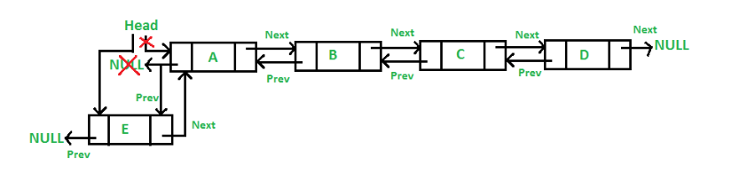
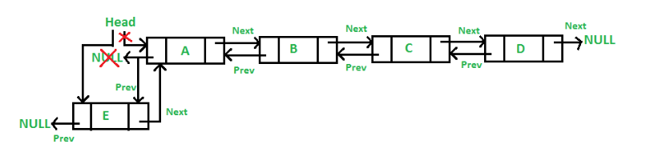
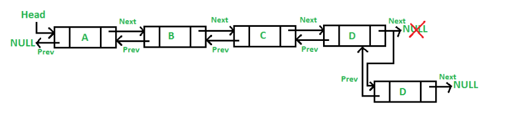

What is Doubly Linked List?
A doubly linked list (DLL) is a special type of linked list in which each node contains a pointer to the previous node as well as the next node of the linked list. Advantages of Doubly Linked List over the singly linked list:
A DLL can be traversed in both forward and backward directions.
The delete operation in DLL is more efficient if a pointer to the node to be deleted is given.
We can quickly insert a new node before a given node.
In a singly linked list, to delete a node, a pointer to the previous node is needed. To get this previous node, sometimes the list is traversed. In DLL, we can get the previous node using the previous pointer.
Operations on Doubly Linked List: Insertion at Beginning:

Firstly, allocate a new node (say new_node).
Now put the required data in the new node.
Make the next of new_node point to the current head of the doubly linked list.
Make the previous of the current head point to new_node.
Lastly, point head to new_node.
Insert Node after a given node: We are given a pointer to a node as prev_node, and the new node is inserted after the given node. This can be done using the following 6 steps:

Firstly, allocate a new node (say new_node).
Now insert the data in the new node.
Point the next of new_node to the next of prev_node.
Point the next of prev_node to new_node.
Point the previous of new_node to prev_node.
Change the pointer of the new node’s previous pointer to new_node.
Add a Node before a given node Add a node before a given node in a Doubly Linked List: Let the pointer to this given node be next_node. This can be done using the following 6 steps.
Allocate memory for the new node, let it be called new_node.
Put the data in new_node.
Set the previous pointer of this new_node as the previous node of the next_node.
Set the previous pointer of the next_node as the new_node.
Set the next pointer of this new_node as the next_node.
Now set the previous pointer of new_node.
If the previous node of the new_node is not NULL, then set the next pointer of this previous node as new_node.
Else, if the prev of new_node is NULL, it will be the new head node.

Add a node at the end in a Doubly Linked List: The new node is always added after the last node of the given Linked List. This can be done using the following 7 steps:
Create a new node (say new_node).
Put the value in the new node.
Make the next pointer of new_node as null.
If the list is empty, make new_node as the head.
Otherwise, travel to the end of the linked list.
Now make the next pointer of last node point to new_node.
Change the previous pointer of new_node to the last node of the list.